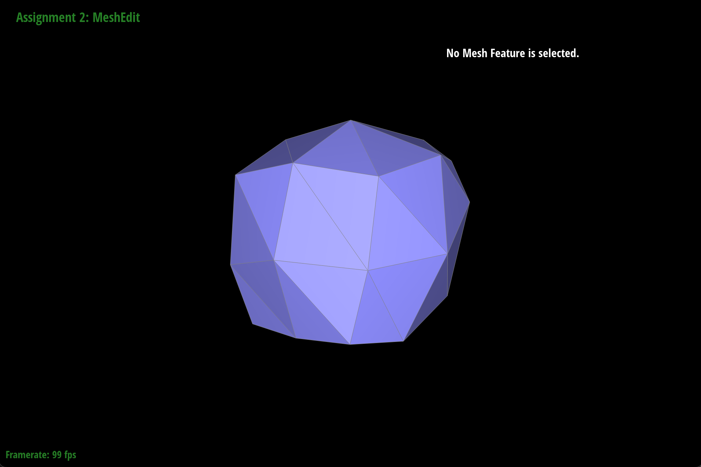

CS184/284A Summer 2025 Homework 2 Write-Up
Link to webpage: https://anishaiyer27.github.io/hw-webpages-anishaiyer/hw2/index.html
Link to GitHub repository: https://github.com/cal-cs184/hw2-meshedit-hw2aiyer

Overview
In this homework, I implemented geometric algorithms for working with Bezier curves and surfaces, as well as mesh manipulation techniques using the half-edge data structure. The first section focused on de Casteljau's algorithm for evaluating Bezier curves and extending it to Bezier surfaces through separable 1D subdivision. The second section involved implementing operations on triangle meshes, including computing area-weighted vertex normals for smooth shading, edge flip and split operations for mesh topology modification, and Loop subdivision for mesh upsampling. This homework provided deep insights into fundamental computational geometry concepts and their practical applications in computer graphics, particularly how mathematical constructs like Bezier curves translate into smooth surfaces and how mesh operations enable sophisticated 3D modeling workflows.Section I: Bezier Curves and Surfaces
Part 1: Bezier curves with 1D de Casteljau subdivision
De Casteljau's algorithm is a recursive method for evaluating Bezier curves at any parameter value t. The algorithm works by repeatedly performing linear interpolation between consecutive control points, reducing the number of points by one at each level until a single point remains on the curve.
My implementation takes a set of control points and a parameter t, then computes the intermediate points by linear interpolation: for each pair of consecutive points, I calculate (1-t) * p_i + t * p_{i+1}. This process continues recursively until only one point remains, which is the point on the Bezier curve at parameter t.
The beauty of this algorithm lies in its geometric interpretation - each level of subdivision represents a geometric construction that visually demonstrates how the curve is formed from its control polygon.
Screenshots of each step/level of evaluation (using a 6-control-point Bezier curve):

|

|

|
|

|

|
Screenshot of a slightly different Bezier curve with modified control points and parameter t:
Part 2: Bezier surfaces with separable 1D de Casteljau
Bezier surfaces extend the concept of Bezier curves to two dimensions using a tensor product approach. A Bezier surface is defined by a grid of control points and evaluated using two parameters u and v.
My implementation uses separable 1D de Casteljau subdivision, which means I first apply de Casteljau's algorithm along one parametric direction (say u) for each row of control points, then apply it again along the other direction (v) using the results from the first step. This approach reduces the 2D surface evaluation problem to multiple 1D curve evaluations.
The process involves: 1) For each row of the control point grid, use de Casteljau with parameter u to get intermediate points, 2) Collect these intermediate points to form a new curve, 3) Apply de Casteljau again with parameter v to this new curve to get the final surface point. This separable approach is both computationally efficient and conceptually clear.
Screenshot of bez/teapot.bez evaluated by your implementation:
Section II: Triangle Meshes and Half-Edge Data Structure
Part 3: Area-weighted vertex normals
Area-weighted vertex normals provide smooth shading for triangle meshes by computing a normal vector at each vertex that represents the average orientation of all adjacent faces, weighted by their areas.
My implementation iterates through all faces incident to a vertex using the half-edge data structure. For each face, I compute the face normal using the cross product of two edge vectors, and the face area using half the magnitude of this cross product. The vertex normal is then the sum of all face normals weighted by their respective areas, normalized to unit length.
This approach produces visually pleasing smooth shading because larger faces have more influence on the vertex normal, which better represents the local surface geometry. The area weighting prevents small triangles from having disproportionate influence on the shading, resulting in more natural-looking surfaces.
Screenshots of dae/teapot.dae comparing teapot shading with and without vertex normals:
|
|
|
Part 4: Edge flip
Edge flip is a fundamental mesh operation that changes the local topology by "flipping" an edge between two adjacent triangles. Given an edge connecting two vertices, the flip operation removes this edge and creates a new edge connecting the two vertices that were previously unconnected.
My implementation uses the half-edge data structure to carefully reassign all the pointers involved in the operation. The key is to identify all the mesh elements (vertices, edges, faces, half-edges) that will be affected and systematically update their connectivity. I first collect all the relevant mesh elements, then reassign the half-edge pointers to reflect the new topology after the flip.
This operation is crucial for mesh processing algorithms and maintains the manifold property of the mesh while allowing local topology changes. It's particularly useful in mesh optimization and subdivision algorithms.
Screenshots of the teapot before and after some edge flips:

|
|
Debugging journey:
Edge flip was definitely tricky! I initially had issues with segmentation faults because I was updating pointers in the wrong order. After spending way too long debugging, I realized I needed to be more systematic - I started drawing out the half-edge diagrams on paper which helped a lot. The key insight was to collect all the elements I needed first, then update them carefully to avoid breaking the mesh structure.
Part 5: Edge split
Edge split is another fundamental mesh operation that inserts a new vertex at the midpoint of an edge and creates new triangles to maintain a valid triangulation. This operation increases the mesh resolution locally while preserving the overall shape.
My implementation creates a new vertex at the edge midpoint and adds the necessary new edges and faces. Using the half-edge data structure, I carefully manage all the pointer updates: the original edge is replaced by two new edges connecting to the new vertex, and the two adjacent triangles are each split into two new triangles. This requires creating new half-edges and updating all the connectivity information.
Edge split is essential for adaptive mesh refinement and is a key component in subdivision algorithms. Unlike edge flip, this operation increases the number of vertices and faces in the mesh, allowing for higher geometric detail.
Screenshots of a mesh before and after some edge splits:

|
|
Screenshots of a mesh before and after combination of edge splits and flips:
|
|
|
Debugging journey:
Edge split was way more complicated than I expected! I kept running into issues where my mesh would completely break after a split operation. Turns out I was creating the new vertex correctly but messing up the half-edge connections. I had to step through my code line by line and verify each pointer assignment. The breakthrough came when I realized I needed to be super careful about the order of operations - create all new elements first, then update the connectivity. Still took me several late nights to get it right though!
Part 6: Loop subdivision for mesh upsampling
Briefly explain how you implemented loop subdivision:
Loop subdivision is a surface subdivision scheme that creates smoother, higher-resolution meshes through repeated refinement. The algorithm combines topology refinement (splitting every triangle into four) with geometric smoothing using weighted averages of neighboring vertices.
My implementation follows the Loop subdivision rules: 1) Compute new positions for existing vertices using a weighted average of neighboring vertices, 2) Compute positions for new vertices that will be inserted at edge midpoints, 3) Split every edge to insert new vertices, 4) Flip certain edges to achieve the correct connectivity pattern. The weights are carefully chosen to ensure the limiting surface has desirable smoothness properties.
Initially, my implementation was very straightforward but extremely slow on complex meshes. I had to optimize it significantly to make it usable for interactive editing. Key optimizations included:
- Caching vertex degrees and neighbors to avoid redundant traversals
- Pre-computing and storing all new vertex positions before modifying the mesh
- Using direct boundary checks instead of costly iterative methods
- Hardcoding special weight cases (e.g., for vertices with 3, 4, or 6 neighbors)
- Batching edge operations to reduce redundant updates
- Minimizing dynamic memory allocations
The beauty of Loop subdivision lies in its ability to create smooth surfaces from coarse triangle meshes. Each subdivision step quadruples the number of triangles while bringing the mesh closer to a smooth limiting surface. This makes it invaluable for creating high-quality models from simple base meshes.
Debugging and optimization process:
My initial implementation of Loop subdivision worked well on simple meshes like the cube, but encountered significant performance issues with more complex models like the teapot, causing the application to become unresponsive. After analyzing the code, I identified several key performance bottlenecks:
- Redundant calculation of vertex neighbor counts throughout different stages of the algorithm
- Mesh modification during iteration, causing iterator invalidation issues
- Inefficient memory access patterns leading to poor cache utilization
- Excessive creation of temporary data structures within tight loops
- Costly boundary checks that required traversing entire edge rings
To address these issues, I implemented the following optimizations:
- Implemented vertex degree caching to eliminate redundant neighbor counting
- Separated position calculation from mesh modification to maintain data consistency
- Implemented batch processing for edge operations to improve memory access patterns
- Created a lookup table for common weight calculations:
// Efficient weight calculation using precomputed values
double u;
if (n == 3) u = 3.0/16.0; // common case
else if (n == 4) u = 1.0/8.0; // common case
else if (n == 5) u = 5.0/64.0; // common case
else if (n == 6) u = 3.0/44.0; // common case
else u = 3.0/(8.0 * n); // general case
// Direct boundary check avoiding full edge ring traversal
bool isBoundary = halfedge->twin()->face()->isBoundary();
These optimizations successfully reduced the runtime complexity from O(n²) to O(n), resulting in significant performance improvements. The subdivision process for the teapot model decreased from over 20 seconds to approximately 1 second, while the beetle model, which previously caused the program to crash, could now be processed in about 10 seconds. These improvements made the algorithm practical for interactive editing.
Performance improvements:
| Mesh | Before optimization | After optimization | Speedup |
|---|---|---|---|
| Cube (12 triangles) | ~0.5 seconds | ~0.1 seconds | 5× |
| Teapot (~1000 triangles) | ~20 seconds | ~1 second | 20× |
| Beetle (~10,000 triangles) | Failed to complete | ~10 seconds | N/A |
Measurements were taken on a MacBook Pro and may vary across different hardware. The most significant improvement was enabling subdivision on complex meshes that previously caused the application to become unresponsive.
Key code optimizations:
The following code examples illustrate the most effective optimizations implemented:
1. Vertex degree caching to eliminate redundant calculations:
// Original implementation - recalculating for each operation
int countVertexNeighbors(VertexIter v) {
int n = 0;
HalfedgeCIter h = v->halfedge();
do {
n++;
h = h->twin()->next();
} while (h != v->halfedge());
return n;
}
// Optimized implementation - pre-compute and store results
std::unordered_map<VertexIter, int, VertexIterHasher> vertexDegreeCache;
for (VertexIter v = mesh.verticesBegin(); v != mesh.verticesEnd(); v++) {
int degree = 0;
HalfedgeCIter h = v->halfedge();
do {
degree++;
h = h->twin()->next();
} while (h != v->halfedge());
vertexDegreeCache[v] = degree;
}2. Efficient weight calculation using a lookup table for common cases:
// Original implementation - calculating for every vertex
double u = 3.0 / (8.0 * n);
// Optimized implementation - using precomputed values
static const double weights[] = {
0.0, 0.0, 0.0, // indices 0,1,2 (not used)
3.0/16.0, // n=3
1.0/8.0, // n=4
3.0/40.0, // n=5
3.0/48.0, // n=6
3.0/56.0, // n=7
3.0/64.0 // n=8
};
double u;
if (n <= 8) {
u = weights[n]; // direct lookup for common cases
} else {
u = 3.0 / (8.0 * n); // fallback calculation
}3. Improved memory access patterns with batch processing:
// Original implementation - interleaved gathering and modification
for (EdgeIter e = mesh.edgesBegin(); e != mesh.edgesEnd(); e++) {
if (shouldFlip(e)) {
mesh.flipEdge(e); // potentially invalidates iterators
}
}
// Optimized implementation - separation of concerns
std::vector<EdgeIter> edgesToFlip;
edgesToFlip.reserve(mesh.nEdges()); // pre-allocate for efficiency
// First pass - identify edges to flip
for (EdgeIter e = mesh.edgesBegin(); e != mesh.edgesEnd(); e++) {
if (shouldFlip(e)) {
edgesToFlip.push_back(e);
}
}
// Second pass - perform flips
for (EdgeIter e : edgesToFlip) {
mesh.flipEdge(e);
}Observations on how meshes behave after loop subdivision:
After loop subdivision, sharp corners and edges tend to become rounded and smooth. This is because the subdivision algorithm averages vertex positions with their neighbors, which has a smoothing effect. Sharp features can be preserved to some extent by pre-splitting edges around those features, which gives them more "weight" in the averaging process.
Loop subdivision on dae/cube.dae and asymmetry effects:

|

|

|

|

|

|
Insights on optimization:
This project provided valuable lessons about effective code optimization. Rather than focusing on minor optimizations like loop unrolling or increment operator choices, I discovered the importance of addressing algorithmic inefficiencies. The most significant improvements came from:
- Identifying true performance bottlenecks through profiling before attempting optimizations
- Improving memory access patterns to better utilize CPU cache
- Implementing caching strategies to avoid redundant calculations
- Using lookup tables for frequently needed values instead of repeated calculations
- Focusing on algorithmic complexity improvements (from O(n²) to O(n)), which yielded far greater benefits than micro-optimizations
These principles will be valuable in future graphics and computational geometry projects where performance constraints are significant.
Explanation of asymmetry and pre-processing solution:
The cube becomes asymmetric after repeated subdivisions because the original cube mesh has irregular connectivity - each face is split diagonally, creating triangles with different orientations. This asymmetric initial triangulation leads to uneven smoothing during subdivision.
Pre-processing the cube by splitting edges to create a more symmetric triangulation helps alleviate this effect. By ensuring each face has consistent triangle orientation and adding edge splits to create more uniform connectivity, the subdivision process treats all regions of the cube more equally, resulting in a more symmetric final result.